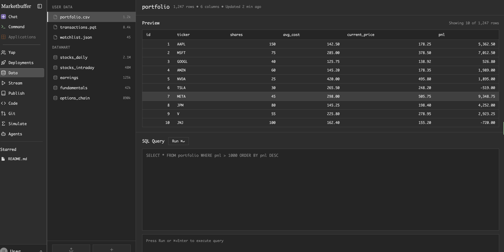
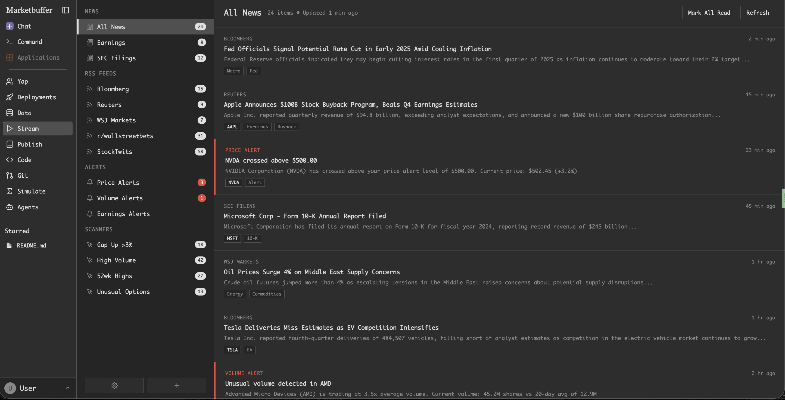
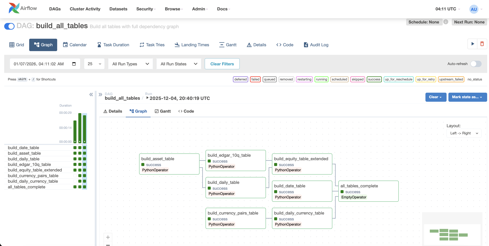
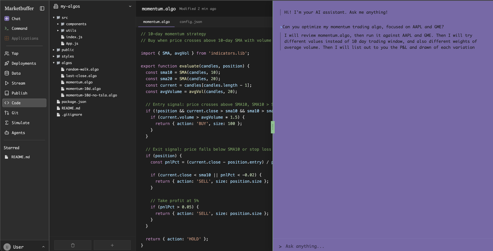

Most impactful on your resume:
- Relevant work experience
- Internship
- Relevant Project Work. Sometimes, this is more valuable than 1 or 2.
I'm seeking QF students who want to have #3 on their CVs. We will collaborate on a software project system that you can point to as evidence of (1) concrete technical skills and (2) exposure to financial markets.
A skill gap between "quant finance" and "computational finance" is technical aspects of electronic markets. Even if you do not intend on being a quant developer, expertise in market microstructure is useful to quant finance. Trading and Strategy is just the tip of the iceberg. 90% of QF is the data and technical infrastructure. Understanding how this infrastructure is built will better equip you to be a quant analyst, researcher, trader. For some firms, especially "collaborative funds" like Two Sigma and Jane Street, being a tech company is their DNA and market edge.
In general, there is a gap between academia and industry needs. For example, every job in QF will require SQL. Through this collaboration, SQL will be one of the concrete skills you can highlight on your resume.
Precedent
Quantopian was a platform where users developed and shared algo trading strategies written in Python. You could backtest against historical data and simulate P&L with walk-forward tests. Point72 (Steve Cohen) was a VC; the business model was crowd-sourced hedge fund—aggregate the best strategies, trade with their own capital, share profits with authors. In my opinion, this business model is difficult to align with VC funding schedules. They were ahead of their time, running out of runway in 2020 before the rise of LLMs.
"To fill the gap left by Quantopian, traders have relied on open source projects like Gekko and Freqtrade. The first companies to capitalize were CrunchDAO, QuantConnect, and Numerai. Recently, cloud-based tools emerged for crypto: 3commas, Mudrex, and Tuned."
— Wikipedia
The space remains niche and the tech last-gen. Meanwhile, there's a confluence of:
- Millions of laid-off tech workers with time, money, and skills to trade
- Oversupply of CS grads; employers favor senior hires who can lever AI
- QF is part of the lexicon and no longer esoterica introduced by Ryan Gosling in The Big Short
- Retail traders are dialing in globally (Korean retail traders DDOS Western stock live streams; their senior citizens are enrolling in technical analysis courses)
- Interest in markets: Polymarket, crypto, prediction markets
- A US administration that doesn't shy away from market-moving headlines and encouraging inflows: https://www.irs.gov/trumpaccounts
Interest in quant trading is higher than ever. Competition for institutional jobs is fierce. Rebels aspiring to start hedge funds from dorm rooms garner millions of views.
AI has enabled non-engineers to build software applications and businesses. Why not algo trading strategies and firms? If Robinhood democratized trading for retail, this project aims to democratize algo trading.
Workstream 01Historical Trading Simulator
Retail traders daydream about having a time machine and trading with present knowledge in "what if" scenarios. Looking up historical prices and sequencing these trades in Excel is tedious. LLMs are not optimized to correctly answer basic queries such as "What is the best performing stock with under a 1 billion dollar market cap in 2022?"
I built a "game" where you start in January 2020 before the GameStop short squeeze with $1,000. On each trading day, you can: (1) buy a ticker, (2) sell the ticker you are holding, or (3) continue to the next trading day.
200% here, 500% there, and a few hundred clicks later you're a millionaire.
In the real world:
- Slippage: You want to buy 100,000 shares at $5. Only 50,000 are filled because the stock rose higher.
- Market impact: Jensen Huang's net worth = number of NVDA shares owned * NVDA stock price. He can never actually sell those many shares at the market price without dragging the price down.
- Brokerage fees and commissions for every trade
There will be disparity between a trading strategy and trade execution. Firms also have to consider tax implications. One area of work is incorporating these factors. In doing so, you have talking points when interviewing with trading firms.
Another area of work is making the simulator more general:
- Granularity: Instead of each turn being a day, we can generalize to every hour. This would require getting more granular data than just the stock's OHLC (open, high, low, close) price on the day. The intraday data for this simulator came from scraping Yahoo! Finance. Supporting intraday trading would require getting other data sources.
- Portfolio: Being able to hold more than one stock at the same time. This also means specifying how many shares to buy and sell instead of the current "full porting" (spend all the cash you have on a single stock) simplification.
- Volume: This goes hand in hand with granularity. If in an hour, only 10000 shares were historically moved, it might not have been possible to trade 100,000 shares. This gets into issues with the orderbook (see workstream #6)
Your ideas and improvements are welcomed!
Workstream 02Algo Trading
Instead of manually clicking, people can code a "bot" to do it. It's a function as follows:
- Input: the current position, data such as today's opening price, yesterday's closing price, the weather, and more.
- Output: buy, sell, or hold
Voilà: a crude algo trading R&D and backtesting platform.
Try the prototype here: https://varrockbank.github.io/marketbuffer/
Past performance is not indicative of future performance. Users want to know if the algo trading strategy was overfitted to the past and will work moving forward. Simple, we run the same user-specified function for the next 30 days (in simulator) and provide a dashboard where they can review the performance of all their trading strategies. Voilà: walk-forward testing.

There will be various other dashboards and tools to review things such as variance, drawdown, Sharpe ratio. Users can compare performance versus index performance (did the strategy just do well because the entire market moved up, or because of inflation?). Basically, packaging up all the statistics and math stuff we're learning right here.
Workstream 03Market Interface
Instead of walk-forward test against the simulator, we talk to an actual stock brokerage that the user has linked to execute the trades such as Charles Schwab, Interactive Brokers or Alpaca. Voilà: an algo trading platform. If we support crypto, Coinbase and Binance.
Having experience with these brokerages would move you to the front of the line if you wanted to apply for a job. If we allow people to buy Vanguard ETFs, we integrate with Vanguard directly. There are all sorts of details to be learned about Vanguard ETFs in the process.
Users can allocate a $1,000 account to one strategy, $2,000 to another. We provide a user interface to review the aggregate performance. Voilà: multi-strat diversification.
Once we're brave enough, we integrate directly with exchanges. We wouldn't be able to allow the general public to use this feature because we'd have to be a regulated financial institution / broker. Suppose we just expose this feature for admin users such as ourselves. This integration would involve C++, the FIX protocol, and deep experience with market microstructure.
Workstream 04Data Platform
Currently the app has 5 years of data for 6 stocks:
No reason to stop there:
- 15+ years of historical data
- 3,000+ US stocks, European stocks, Asian stocks, crypto, any tradeable asset
- Option chains and Derivatives
- Bonds
- commodities
- Not just price—volume, fundamentals, alternative data
Each of these asset classes has to be treated differently. For bonds, we want to represent data about maturity and interest rates. For stocks, dividend payouts, normalizing for stock splits, accounting for delistings, IPOs. I have no idea what information might be relevant for corn futures. For options, we want to collect data about open contracts. This is the whole point—we learn more about these different asset classes.
Once we provide an interface for querying arbitrary data, we've formed the basis of a data platform. Aggregate news? Now we're approaching Bloomberg and Shkreli's Godel Terminal. Add social media sentiment from Instagram and TikTok? Relatively new because this information is generally siloed, at least to the general public.
These are just lists of data that users can access in their algo trading.
Ocean tide schedule. Traffic information. Crime data. There's no limit. Is the information useful and relevant? Well, we will dogfood and make this platform a place where we can R&D trading strategies off this alternative data
This workstream involves working on data pipeline. The repository is here: https://github.com/varrockbank/equityzukan. You may have heard of MapReduce. The current implementation uses the Apache Spark framework. The orchestrator is Apache Airflow. You can see this tech stack is aligned with Data Engineering at Optiver: Data Engineer (Commodities)
Workstream 05Language Ecosystem & Compilers
JavaScript will be the DSL (domain specific language) for algo trading. JavaScript is the most popular programming language in the world, yet there's no finance ecosystem or "mindshare" around it, yet. There are millions of webdevs who'd try algo trading if the barrier were lower.
DataFrame
Python has NumPy, Pandas, and now Polars (Optiver is a sponsor). At Jane Street, one intern project was porting Polars to OCaml. If we port Polars to JavaScript, that's a talking point for interviews at firms using or interested in migrating to Polars.
Ecosystem
JavaScript is not known for Stats/ML/finance libraries like Python. For example, SciKit Learn in Python. This is an opportunity to pioneer data libraries that other people can depend on. You will solidify your stats knowledge in the process. Since Python already has these libraries, there is little opportunity for us to be a key contributor there.
Python is popular for data work because people created data libraries for it, then a community formed. This is developer mindshare—an anthropological phenomenon, not Python being fundamentally superior. We can do the same and be a critical part of the ecosystem and supply chain. Jane Street famously picked up most of the OCaml ecosystem contributors.
Compilers
Another workstream: taking users' JavaScript algos and converting them to something fast—C++ (lingua franca of quant finance) or Rust (gaining popularity) when we actually execute in the real world. This is compilers work. It's worth pointing out that most of Jane Street's technical interns work on language/compilers projects: https://blog.janestreet.com/wrought-2025/
C++
Every HFT fund uses C++. Stock exchanges are written in C++. Most of finance uses C++. Various aspects of this project will involve C++ code:
- High-performance backtesting engine
- Exchange connectivity and market data parsing
- Compilation targets for user strategies
- Latency-critical execution paths
Workstream 06Level 3 Data
See What is level3 market data
This is the most granular market data. It is tick-by-tick and individual trades. The simulator aggregates prices and volume, but tick data allows us to reproduce the order book at any given point in time. Certain trading strategies involve market depth. This is literally where Flow Traders derive their name from: analyzing order flow.
The scale of this data will require something like C++ and a time series database. This will also involve understanding market making and implementing an order-matching system.
Workstream 07IDE
R has RStudio. Java has IntelliJ. These IDEs understand the language and give the user cues. For us, this would be:
- Provide autocomplete if users type out a stock ticker when implementing their trading strategy
- Warn about numerical and rounding issues
- Complain that the user forgot to return a buy/sell/hold decision in one of their code branches
- Warn about logic bugs such as the user attempting to buy more stock than they have money for, in a non-margin account
The AI coding agent Cursor is built around VSCode/Monaco. Jane Street built theirs around Emacs. I've built a new text editor for the web here: Buffee.
Workstream 08AI
There will be an AI agent that can view the user's source code files. It has access to the data platform and understands how to map user queries in human language to SQL queries. It understands the algo trading protocol of input/output. It also has access to various parts of the website and can review things like P&L.
We are not developing a new foundational model. We will augment an existing one by providing it context. This is mostly an engineering/product problem, more so than PhD-level research, albeit you are free to do as much research as you want. Imagine pasting a giant file into ChatGPT. Instead, we feed an LLM the data platform and tell it to remember this across all users. On individual user queries, it looks at the user's source code.